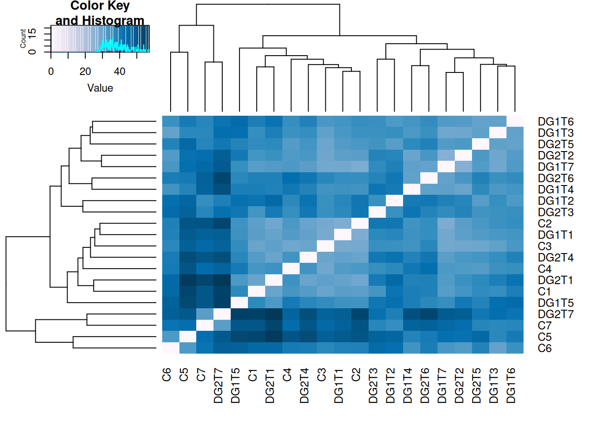
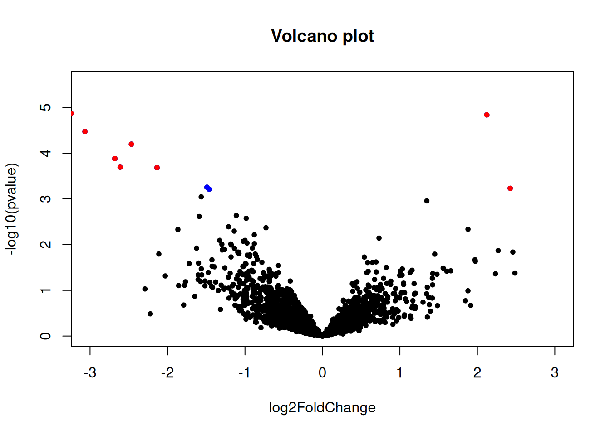

Read counts analysis with DESeq2
Control vs DG1
##
## out of 2180 with nonzero total read count
## adjusted p-value < 0.1
## LFC > 0 (up) : 0, 0%
## LFC < 0 (down) : 5, 0.23%
## outliers [1] : 0, 0%
## low counts [2] : 0, 0%
## (mean count < 6)
## [1] see 'cooksCutoff' argument of ?results
## [2] see 'independentFiltering' argument of ?resultsSignificant genes with the strongest up regulation
## log2 fold change (MLE): Group DG1 vs C
## Wald test p-value: Group DG1 vs C
## DataFrame with 0 rows and 6 columnsSignificant genes with the strongest down regulation
## log2 fold change (MLE): Group DG1 vs C
## Wald test p-value: Group DG1 vs C
## DataFrame with 5 rows and 6 columns
## baseMean log2FoldChange lfcSE stat pvalue
## <numeric> <numeric> <numeric> <numeric> <numeric>
## Cluster-3916.0 55.7413 -2.94200 0.780559 -3.76909 1.63841e-04
## Cluster-3207.0 122.2578 -3.00892 0.772009 -3.89752 9.71815e-05
## Cluster-1863.0 118.1395 -3.42860 0.745757 -4.59748 4.27641e-06
## Cluster-5165.0 110.5364 -3.76423 0.742504 -5.06963 3.98583e-07
## Cluster-3339.0 238.4827 -3.76597 0.743422 -5.06573 4.06845e-07
## padj
## <numeric>
## Cluster-3916.0 0.071434596
## Cluster-3207.0 0.052963919
## Cluster-1863.0 0.003107523
## Cluster-5165.0 0.000443461
## Cluster-3339.0 0.000443461Report
MA plots
Samples clustering

Volcano plot

Control vs DG2
##
## out of 2180 with nonzero total read count
## adjusted p-value < 0.1
## LFC > 0 (up) : 2, 0.092%
## LFC < 0 (down) : 11, 0.5%
## outliers [1] : 0, 0%
## low counts [2] : 212, 9.7%
## (mean count < 11)
## [1] see 'cooksCutoff' argument of ?results
## [2] see 'independentFiltering' argument of ?resultsSignificant genes with the strongest up regulation
## log2 fold change (MLE): Group DG2 vs C
## Wald test p-value: Group DG2 vs C
## DataFrame with 2 rows and 6 columns
## baseMean log2FoldChange lfcSE stat pvalue
## <numeric> <numeric> <numeric> <numeric> <numeric>
## Cluster-4989.0 53.9402 2.11753 0.489201 4.32854 1.50104e-05
## Cluster-1248.0 16.7584 2.42456 0.706770 3.43048 6.02512e-04
## padj
## <numeric>
## Cluster-4989.0 0.00738512
## Cluster-1248.0 0.09881204Significant genes with the strongest down regulation
## log2 fold change (MLE): Group DG2 vs C
## Wald test p-value: Group DG2 vs C
## DataFrame with 11 rows and 6 columns
## baseMean log2FoldChange lfcSE stat pvalue
## <numeric> <numeric> <numeric> <numeric> <numeric>
## Cluster-4181.0 1739.6593 -1.46477 0.425791 -3.44011 5.81483e-04
## Cluster-5090.0 1753.5071 -1.49264 0.430521 -3.46705 5.26204e-04
## Cluster-3299.0 875.2495 -2.13597 0.574315 -3.71917 1.99882e-04
## Cluster-3204.0 450.9683 -2.46695 0.615370 -4.00889 6.10052e-05
## Cluster-4009.0 50.5302 -2.61182 0.702265 -3.71914 1.99900e-04
## Cluster-2041.0 41.8972 -2.68140 0.700616 -3.82721 1.29604e-04
## Cluster-5165.0 110.5364 -3.06732 0.737606 -4.15848 3.20374e-05
## Cluster-1863.0 118.1395 -3.24688 0.744006 -4.36404 1.27680e-05
## Cluster-3339.0 238.4827 -3.49332 0.742120 -4.70721 2.51129e-06
## Cluster-3207.0 122.2578 -3.59574 0.773866 -4.64646 3.37685e-06
## Cluster-1255.0 266.8146 -6.79768 1.995104 -3.40718 6.56381e-04
## padj
## <numeric>
## Cluster-4181.0 0.09881204
## Cluster-5090.0 0.09881204
## Cluster-3299.0 0.04371153
## Cluster-3204.0 0.02000971
## Cluster-4009.0 0.04371153
## Cluster-2041.0 0.03643732
## Cluster-5165.0 0.01260993
## Cluster-1863.0 0.00738512
## Cluster-3339.0 0.00332282
## Cluster-3207.0 0.00332282
## Cluster-1255.0 0.09936599Report
MA plots
Samples clustering

Volcano plot
